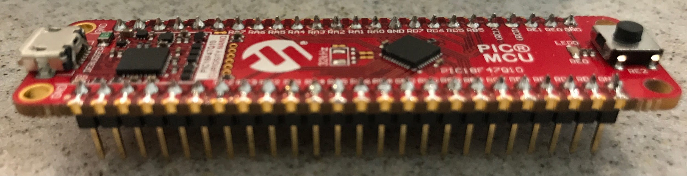

The goal of this tutorial is to introduce you to the MPLabX IDE, and to verify that you can create a project, add a peripheral (EUSART), configure it to work across a virtual COM port, and communicate back and forth to your PC.
PIC18F47Q10 Curiosity Nano Microchip Main Page
Microchip developer tutorials site
Software
Open the Curiosity Nano box and the two antistatic bags inside. Solder the headers into the PCB so that the long side can be plugged into a breadboard and the short side goes through the PCB and can be soldered on the top. 
Follow the instructions in the Quick Start section of the Hardware User Guide to download and install the MPLAB® X IDE (including IPE and 8 bit MCU support), XC8 compiler, and MPLAB® Code Configurator (MCC). Note: The free compiler license is sufficient for this course.
Open MPLAB® X IDE and plug the Curiosity Nano board into the USB port of your computer
Using the Hardware User Guide and lessons learned last semester with connecting to the PSoC®, identify:
| Critical Information | Importance |
|---|---|
| a. What the virtual COM port (that communicates over the Curiosity Nano’s USB to your computer) is called | Needed in order to connect PuTTY to the Curiosity Nano |
| b. Which EUSART subsystem connects to it | Needed to determine which EUSART port to connect the PIC to in order to communicate with the debugger and computer |
| c. Which GPIO pin the onboard LED on the Curiosity Nano is connected to | Needed to show activity later in this assignment |
| d. Which specific pins are used for receive and transmit on the PIC | Needed to assign the correct pins to the EUSART component |
| e. Which pin of the Curiosity Nano board outputs the regulated power used by the “target” (the PIC18F47Q10) | Needed to know where you can access power and ground on the Curiosity Nano board |
| f. All of the ground pins | |
| g. How much current can a digital I/O pin safely source or sink? (Hint: See the PIC18F47Q10 Datasheet) | Needed to match the current needs of external loads (e.g., LEDs) with the IC and determine whether you need interface circuitry (e.g., a transistor) |
In MPLAB X, create a new project for the PIC18F47Q10
Open MCC, and select the default file location when prompted.
Please use MCC Classic. We can support it better, it has more advanced configuration options, but is also still relatively easy to use.
In the System Module, select the HFINTOSC (high frequency internal oscillator) at 4 MHz. Keep the clock divisions at 4.
Add and configure a new EUSART peripheral (pick the one you identified above). Make sure you check the “connect to stdio” box.
Open up the pin manager grid and ensure that RX and TX are mapped to the correct pins (as you identified in the HW User Guide’s pinout section in the previous step).
Open up pins in the resources tab and ensure that your RX is an input and your TX is an output, and that neither is set as “analog”
Generate your MCC configuration.
Open EUSARTX.h (where “X” is the correct EUSART peripheral) in the MCC-generated header files within the project explorer. Read through this document, Identify each function and determine what the purpose of each is. Then find the function that initializes this EUSART subsystem and note it.
Open “main.c”. Make sure you initialize the EUSART subsystem with that function near the top of the main() function (but after SYSTEM_Initialize()).
Go back to EUSARTX.h (where “X” is the correct EUSART peripheral) in the MCC-generated header files within the project explorer. Find and copy a code example for “echoing” characters received by EUSART. This can be found in a commented-out section of one of the functions
Repen “main.c” and paste this example into the while loop within the main() function. You will have to declare new variable(s) and/or adjust the code to get it to successfully compile and echo characters.
Build the project and resolve any errors.
Download the project to the target. This can be done one of two ways
a. Using the download button (ensure you are connected to the Curiosity Nano board rather than the simulator, and that you have selected the Curiosity Nano as the programming “tool”.)
b. Copying the .hex file from project-name/dist/production/project-name.hex to the “Curiosity” drive in file explorer.
Now, change the code so that whenever you type a semicolon character, “;” putty advances to a new line, prints “Go ASU!”, then advances to the next line and continues operating in the same manner as before.
In MCC, map TX to a second pin so that in addition to echoing back to putty, an external LED also flashes according to each character sent. Make sure to use an appropriately calculated current limiting resistor in series with the LED.
Next, change the baud rate for the selected EUSART system to 1200. This will have the effect of slowing down the serial transmission rate to the point where you will be able to see the LED flash whenever it is transmitting.
{kind=link}